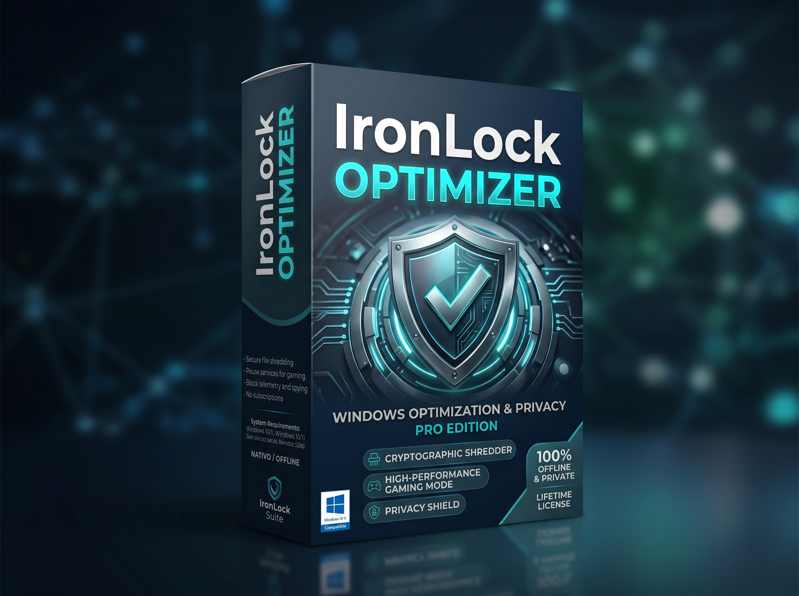

IronLock Vault
IronLock Vault V1.0 is the ultimate digital vault for Windows. No internet connections, no subscriptions, no hidden tracking. Lock, encrypt, and shred your files with military-grade security operating exclusively on your hardware.

IronLock Vault STANDARD
Get the complete 100% offline security suite. Includes standard installer, portable version for USB drives, and official manuals. Protect your data today without subscriptions or telemetry.
- ✓ Encriptación AES-256 100% Offline
- ✓ Modo Portable USB e Instalador
- ✓ Bóvedas cifradas y Destrucción Segura
- ✓ Cartera de Credenciales y Bóveda Señuelo
* Compatible with Windows 10 & 11 (64-bit). Immediate digital delivery.

IronLock Vault PRO
The ultimate corporate-grade shield. Includes everything in Standard PLUS: Anti-Sabotage System, Strict Integrity Control, Secure Uninstaller, and Proprietary .EXE Package Exporter.
- ✓ Todo lo incluido en Standard
- ★ Sistema Anti-Sabotaje y Anti-Debug
- ★ Control de Integridad Estricto (V8 Bytecode)
- ★ Desinstalador Seguro con Contraseña Maestra
- ★ Empaquetador de Archivos Propietarios (.EXE Autónomo)
* Compatible with Windows 10 & 11 (64-bit). Immediate digital delivery.
IronLock Optimizer
Maximize your PC's performance safely. IronLock Optimizer cleans junk files, optimizes your registry, and boosts your system's speed while maintaining our strict 100% offline privacy standard.

IronLock OPTIMIZER
Breathe new life into your system. Get the definitive optimization tool designed for speed, stability, and total privacy without telemetry.
- ⚡ Limpieza profunda de archivos basura
- ⚡ Optimización de registro y arranque
- ⚡ Game Booster: Máximo rendimiento
- ⚡ Desactiva la telemetría de Windows
- ⚡ 100% Privado y Seguro
* Compatible with Windows 10 & 11 (64-bit). Immediate digital delivery.
Why choose IronLock?
Total Isolation (Zero-Cloud)
Unlike the competition, IronLock software does not connect to the internet. There are no hackable "automatic cloud backups" or telemetry. Your data never leaves your hard drive.
One-Time Payment. No Subscriptions.
Software shouldn't be a monthly rental. Pay once and get a lifetime license. End of story.
Transparent Implementation
No invasive kernel drivers slowing down your PC. We use native Windows permissions to guarantee unbreakable protection and optimization without harming your OS.
Vault Security Features
Protected Folders
Lock and hide entire folders on your computer. Neither Windows Explorer nor other programs can access them without your master password.
Encrypted Vaults
Create shielded containers with AES-256-GCM encryption. When you move a file to the vault, the original is automatically and securely shredded.
Portable Mode (USB)
Take your encrypted files wherever you go. Run IronLock Vault directly from a flash drive without installing anything or leaving traces on the host computer.
Secure Shredding
Delete files permanently and irretrievably. Our algorithm overwrites your data, making recovery impossible even with forensic software.
Decoy Vault
Protection against physical coercion. Set up a fake password that opens a dummy vault with harmless data, keeping your true secrets hidden.
Credential Wallet
Manage and protect your passwords, bank cards, and secret notes directly inside your encrypted vault, isolated from traditional password managers.
★ Anti-Sabotage System (PRO)
Advanced anti-debugging defense. Automatically detects unauthorized inspection tools, purges cryptographic buffers from RAM, and terminates execution to prevent tampering.
★ Strict Integrity Control (PRO)
Compiled via V8 bytecode and heavy AST code obfuscation. Source code is completely hidden behind machine-level binaries and dead-code injection layers.
★ Secure Master Uninstaller (PRO)
Enterprise-grade removal protocol. Requires master password verification to execute a clean wipe of application data, caches, and protected registry artifacts.
★ Secure .EXE Exporter (PRO)
Package encrypted files into proprietary formats or standalone self-decrypting executables (.exe). Share safely with third parties; they open securely with the password on the receiver's end.
Frequently Asked Questions
Do I need an internet connection to use IronLock?
Absolutely not. IronLock software is designed to work 100% offline. It does not require the internet to activate or function. Your privacy is guaranteed by design.
What happens if I forget my Vault master password?
For your security, IronLock Vault uses real encryption with no "backdoors". If you lose the master password, it is mathematically impossible to recover the encrypted data from your vault.
Does the license force me to pay monthly fees later?
No. It is a one-time payment. With your purchase, you get perpetual access to your chosen version with no annual renewals or hidden fees.
Does it work on Mac or Linux?
Currently, IronLock software is designed and optimized exclusively for the Windows (64-bit) ecosystem, leveraging its native permission systems for maximum effectiveness.